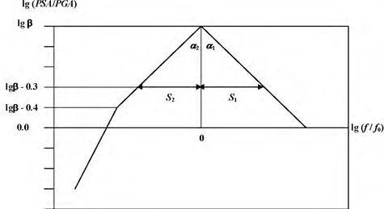

СП 286.1325800.2016 «Объекты строительные повышенной ответственности. Правила де»
О документе: разработчики, утверждение, регистрация, ключевые слова
СП 286.1325800.2016
МИНИСТЕРСТВО СТРОИТЕЛЬСТВА И ЖИЛИЩНО-КОММУНАЛЬНОГО ХОЗЯЙСТВА РОССИЙСКОЙ ФЕДЕРАЦИИ
Издание официальное
Москва 2016
Форматированная
таблица
Отформатировано:
По
левому
краю
Отформатировано: По левому краю, Отступ: Первая строка: 0 см, Справа: 13,92 см
© Минстрой России, 2016
Настоящий нормативный документсвод правил не может быть полностью или частично воспроизведен, тиражирован и распространен в качестве официального издания на территории Российской Федерации без разрешения Минстроя России
Библиография…………………………………………………………………………………
отформатировано: русский
Отформатировано:
По
левому
Отформатировано:
строка:
см,
Справа:
По
левому
13,92
см
краю
краю,
Отступ:
Первая
Дата введения -- 20167-ХХ06-ХХ17
УДК [69+699.841]
ОКС 91.100.10
УДК [69+699.841]
ОКС 91.100.10
Ключевые слова: землетрясение, карты сейсмического районирования, каталог землетрясений, сейсмичность площадки, балл, сейсмическое воздействие, преобладающий период, коэффициент динамического усиления, спектр реакции (ответа), акселерограмма землетрясения, ускорение, уровень ускорения, скорость, смещение, продолжительность
ИСПОЛНИТЕЛЬ 'АО ЦНИИПромзданий'
наименование организации
Руководитель разработки
Генеральный директор
В.В.Гранев
Исполнитель
Заместитель
генерального директора
Д.К.Лейкина
СОИСПОЛНИТЕЛЬ ИФЗ РАН
наименование организации
Руководитель разработки
Директор ИФЗ РАН
С.А.Тихоцкий
Ответственный исполнитель
Заместитель
директора ИФЗ РАН
Е.А.Рогожин
Исполнители:
Главный научный сотрудник
Ф.Ф.Аптикаев
Ведущий научный сотрудник
А.И.Лутиков
Заведующий лабораторией
А.Н.Овсюченко
Заведующий лабораторией
Р.Э.Татевосян
Отформатировано: междустрочный, 1,5 строки
СП 286.1325800.2016 Окончательная редакция Ведущий научный сотрудник О.О.Эртелева
Отформатировано:
Отформатировано:
строка:
см,
Справа:
По
левому
По
левому
13,92
см
краю
краю,
Отступ:
Первая
Введение
Настоящий свод правил разработан в соответствии с требованиями Федерального закона от 30 декабря 2009 г. № 384-ФЗ «Технический регламент о безопасности зданий и сооружений» [1].
Настоящий свод правил разработан Федеральным государственным бюджетным научным учреждением науки Институтом физики Земли им. О.Ю. Шмидта Российской академии наук (ИФЗ РАН) (руководители разработки - директор ИФЗ РАН, д-рокт. физ.- мат. наук
С.А. Тихоцкий исполнитель
, зам. директора ИФЗ РАН, докт.д-р геол.-мин. наук, отв.
Е.А. Рогожин
А.И. Лутиков
Татевосян
, докт.д-р физ.-мат. наук
, канд. геол.-мин. наук
Ф.Ф. Аптикаев
А.Н. Овсюченко
, канд. физ.-мат. наук
О.О. Эртелева
).
В своде правил установлены требования в соответствии с Федеральным законом от 30 декабря 2009 г. №384-ФЗ «Технический регламент о безопасности зданий и сооружений», учтены требования международных и европейских нормативных документов, применены единые методы определения эксплуатационных характеристик и методов оценки.
Нормативными документами предусмотрено проведение специализированных сейсмологических и сейсмотектонических исследований [СП 14.13330.2014 «Строительство в сейсмических районах», Приказ Минрегиона России от 30 декабря 2009 г. № 624], материалы этих работ могут использоваться для уточнения сейсмичности района строительства объектов повышенной ответственности. По сути, эти специализированные исследования отвечают задачам детального сейсмического районирования (ДСР). Однако нет методических указаний, как такие работы выполнять.
Вплоть до настоящего времени проведение работ по ДСР никакими нормативными документами не регламентировалось. Настоящий свод правил представляет собой новый документ, официально утвержденных аналогов которому ранее не существовало.
Свод правил разработан Федеральным государственным бюджетным научным учреждением науки Институтом физики Земли им. О.Ю. Шмидта Российской академии наук (ИФЗ РАН) (директор ИФЗ РАН, докт. физ.-мат. наук Тихоцкий С.А., зам. директора ИФЗ РАН, докт. геол.-мин. наук, отв. исполнитель Рогожин Е.А., докт. физ.мат. наук Аптикаев Ф.Ф., канд. физ.-мат. наук Лутиков А.И., канд. геол.-мин. наук Овсюченко А.Н., докт. физ.-мат. наук Татевосян Р.Э., канд. физ.-мат. наук Эртелева О.О.).
, канд. физ.-мат. наук
, докт.д-р физ.-мат. наук
Р.Э.
Окончательная редакция отформатировано: отформатировано: отформатировано:
Шрифт:
Шрифт: русский
| отформатировано: Шрифт: курсив |
|---|
| отформатировано: Шрифт: курсив |
| отформатировано: Шрифт: курсив |
| отформатировано: Шрифт: курсив |
| отформатировано: Шрифт: курсив |
| отформатировано: Шрифт: курсив |
| отформатировано: Шрифт: курсив |
Отформатировано: Отступ: Первая строка: 1 см не не полужирный, полужирный, русский русский
ОБЪЕКТЫ СТРОИТЕЛЬНЫЕ ПОВЫШЕННОЙ ОТВЕТСТВЕННОСТИ. Правила детального сейсмического районирования
Building objects of high critically rating. Guidelines of detailed seismic zoning
1. 1 Область применения 2. 1.1 Настоящий свод правил предназначен для проведения работ по детальному сейсмическому районированию (детальному сейсмическому районированию (ДСР)), включающих в себя сейсмотектонические, сейсмологические исследования, при изысканиях для объектов повышенного уровня ответственности, которые, в соответствии с Градостроительным кодексом Российской Федерации от 29.12.2004 №190-ФЗ[2] отнесены к особо опасным, технически сложным или уникальным объектам. 3. 1.2 Настоящий СПсвод правил должны распространяется на новые объекты повышенной ответственности, а также на проведение капитального ремонта, реконструкции и восстановлениея ранее возведенных объектов, если такие работы не были выполнены при их строительстве. 4. 1.3 Настоящий свод правил не распространяется на детальное сейсмическое районированиеДСР при проектировании вновь строящихся, реконструируемых и технически перевооружаемых объектов атомной энергетики, крупных гидротехнических сооружений, транспортных сооружений, крупных линейных объектов, а также площадных объектов (типа например, территорий территории субъектов Российской Федерации, крупныхе городова).
2. Нормативные ссылки
В настоящем своде правил приведены использованы нормативные ссылки на следующие нормативные документы:
СП 14.13330.2014 «СНиП II-7-81* Строительство в сейсмических районах» (с изменением № 1)
СП 286.1325800.2016 отформатировано: разреженный на 1 пт отформатировано: Шрифт: 12 пт отформатировано: английский (США)
Отформатировано: Отступ: Первая строка: 1 см, междустрочный, 1,5 строки, без нумерации отформатировано: русский
Отформатировано: междустрочный, 1,5 строки отформатировано: русский отформатировано: русский отформатировано:
Шрифт: пт, не полужирный
Отформатировано: По ширине, Отступ: Слева: 0 см, Первая строка: 1 см, междустрочный, 1,5 строки

Окончательная редакция
СП 47.13330.2012. Инженерные изыскания для строительства.
Основные положения. Актуализированная редакция СНиП 11-02-96. М.: 2 0 1 3 .
СТО Газпром 2-2.1-249-2008. Магистральные газопроводы. М.: ОАО « Г а з п р о м » , 2 0 0 8 .
Градостроительный кодекс Российской Федерации от 29.12.2004 №190-ФЗ
Федеральный закон от 27 декабря 2002 г. № 184 -ФЗ «О техническом р е г у л и р о в а н и и »
Федеральный закон от 30 декабря 2009 г. № 384-ФЗ «Технический р е г л а м е н т о б е з о п а с н о с т и с о о р у ж е н и й »
Примечание - При пользовании настоящим сводом правил целесообразно проверить действие ссылочных документов в информационной системе общего пользования - на официальном сайте федерального органа исполнительной власти в сфере стандартизации в сети Интернет или по ежегодному информационному указателю «Национальные стандарты», который опубликован по состоянию на 1 января текущего года, и по выпускам ежемесячного информационного указателя «Национальные стандарты» за текущий год. Если заменен ссылочный документ, на который дана недатированная ссылка, то рекомендуется использовать действующую версию этого документа с учетом всех внесенных в данную версию изменений. Если заменен ссылочный документ, на который дана датированная ссылка, то рекомендуется использовать версию этого документа с указанным выше годом утверждения (принятия). Если после утверждения настоящего свода правил в ссылочный документ, на который дана датированная ссылка, внесено изменение, затрагивающее положение на которое дана ссылка, то это положение рекомендуется применять без учета данного изменения. Если ссылочный документ отменен без замены, то положение, в котором дана ссылка на него, рекомендуется применять в части, не затрагивающей эту ссылку. Сведения о действии сводов правил целесообразно проверить в Федеральном информационном фонде стандартов.Примечание - При пользовании настоящим сводом правил целесообразно проверить действие ссылочных стандартови сводов правил в информационной системе общего пользования - на официальном сайте национального органа Российской Федерации по стандартизации в сети Интернет, или по ежегодно издаваемому информационному указателю «Национальные стандарты», который опубликован по состоянию на 1 января текущего года, и посоответствующим ежемесячно издаваемым информационным указателям, опубликованным в текущем году. Если ссылочный документ заменен (изменен), то при пользовании настоящим сводом правил следует руководствоваться замененным (измененным) документом. Если ссылочный документ отменен без замены, то положение, в котором дана ссылка на него, применяется в части, не затрагивающей эту ссылку.
Отформатировано: Основной текст, По левому краю, Отступ: Слева: 0 см
Отформатировано: Основной текст, По левому краю, Отступ: Слева: 0 см, интервал после: 0 пт
Отформатировано: Основной текст, По левому краю, Отступ: Первая строка: 0 см, интервал после: 0 пт отформатировано: Шрифт: (по умолчанию) Times New Roman, 10 пт, русский, разреженный на 2 пт
Отформатировано: Отступ: Слева: 0 см, Первая строка: 1 см, междустрочный, 1,5 строки отформатировано: Шрифт: (по умолчанию) Times New Roman, 10 пт, русский
Отформатировано: По правому краю
Окончательная редакция
3. Термины и определения
В настоящем документе своде правил приняты применены следующие термины и с соответствующими определениями:
3.1 акселерограмма (велосиграмма, сейсмограмма): Зависимость ускорения (скорости, смещения) от времени точки основания или сооружения в процессе землетрясения, имеющая одну, две или три компоненты.
- 3.2 акселерограмма землетрясения: Запись процесса изменения во времени ускорения колебаний грунта (основания) для определенного направления.
3.3 акселерограмма синтезированная: Акселерограмма, полученная с помощью расчетных методов, в том числе, на основе статистической обработки ряда акселерограмм и/или спектров реальных землетрясений с учетом местных сейсмологических условий -магнитуды, типа подвижки в очаге, расстояния и результатов СМР.
3.34 активный разлом: Тектоническое нарушение с признаками постоянных или периодических перемещений бортов разлома в позднем плейстоцене --- голоцене (за последние 100 000 лет), величина (скорость) которых таковаая, что она представляет опасность для сооружений и требует специальных конструктивных и/или компоновочных мероприятий для обеспечения их безопасности.
3.45 вероятность превышения ( Pt ) : Вероятность превышения Pt рРассчитываетсяют из представления, что поток землетрясений в области средних и более периодов повторения удовлетворяет распределению Пуассона, откуда следует, что превышение расчетной балльности за t лет (в нашем данном случае t = 50 лет) может быть определено по формуле:
где T -- средний период повторения сейсмической интенсивности I .
3.6 воздействие сейсмическое: Движение грунта, вызванное природными или техногенными факторами (землетрясения, взрывы, движение транспорта, работа промышленного оборудования), обусловливающее движение, деформации, иногда разрушение сооружений и других объектов.
Отформатировано: междустрочный, 1,5 строки отформатировано: Шрифт: не полужирный отформатировано: Шрифт: не полужирный отформатировано: Шрифт: не полужирный отформатировано: Шрифт: не полужирный отформатировано: Шрифт: не полужирный отформатировано: Шрифт: не полужирный
Отформатировано: Отступ: Первая строка: 0 см, междустрочный, 1,5 строки отформатировано: Шрифт: не полужирный
Отформатировано: междустрочный, 1,5 строки
Отформатировано: По левому краю
Отформатировано: По левому краю, Отступ: Первая строка: 0 см, Справа: 13,92 см
Окончательная редакция
на которых в первый и последний раз уровень спектра достиг половины его максимального значения.
Примечание - Логарифмическую ширину спектров следует измерять в безразмерных величинах, например в октавах.Логарифмическую ширину спектров следует измерять в октавах, а не в герцах, т. е. в безразмерных единицах.
3.1124 матрица сейсмической активности A 3.3: Аналог сейсмической активности A 10, которуюая вместе с матрицей M max используютется для расчета сейсмической сотрясаемости,. В ней (магнитуда MS, =равная 3,.3, соответствует землетрясениям с энергетическим классом К, = равным 10, тем самым сохраняется преемственность в оценках величины сейсмической активности к исследованиям прошлых лет и обеспечивается сопоставимость полученных результатов) значения сейсмической активности в которой отнесены к центрам узлов координатной сетки.
Примечание - Магнитуда MS, равная 3,3, соответствует землетрясениям с энергетическим классом К , равным 10, тем самым сохраняется преемственность в оценках величины сейсмической активности к исследованиями прошлых лет и обеспечивается сопоставимость полученных результатов.
3.1235 общее сейсмическое районирование; ( ОСР): Метод сейсмического районирования , заключающийся в оценке нормативной сейсмичности районов на территории всей страны для нормативных периодов повторяемости. Масштаб карт ОСР 1:2 500 000-÷-1:8 000 000. При ОСР гарантировано выделение структур, способных генерировать землетрясения с магнитудой выше 6.
3.1346 палеосейсмодислокации: Следы на поверхности земли, оставленные палеоземлетрясениями. По отношению к очагу землетрясенияВыделяют первичные палеосейсмодислокации, разделяются на две большие группы --- первичные и вторичные. К первичнымк которым относятся сейсмотектонические разрывы. К, и; к вторичныем, представляющием собой результат сейсмических колебаний, --относятся сейсмогенные оползни, обвалы, осыпи, каменные лавины, гравитационные и вибрационные трещины, выбросы разжиженных грунтов и проседания земной поверхности.
6 3.1457 период представительной фиксации землетрясений T repr: Под периодом представительной фиксации землетрясений ( T repr) определенного интервала магнитуд понимается период времени, в течение которого землетрясения в пределах этого интервала магнитуд фиксируются без пропусков на рассматриваемой территории. При отформатировано: Шрифт: 10 пт, разреженный на 1,3 пт отформатировано:
Шрифт: пт отформатировано:
Шрифт: не полужирный
- отформатировано: Шрифт: не полужирный отформатировано:
Шрифт: не отформатировано: отформатировано:
Шрифт: не курсив курсив
Шрифт: не курсив отформатировано: Шрифт: 10 пт, разреженный на 1,3 пт отформатировано:
Шрифт: пт
- отформатировано: Шрифт: 10 пт, не надстрочные/ подстрочные
- отформатировано: Шрифт: 10 пт
- отформатировано: Шрифт: 10 пт, курсив
- отформатировано: Шрифт: 10 пт
- отформатировано: Шрифт: 10 пт
- отформатировано: Шрифт: не полужирный отформатировано:
Шрифт: не полужирный отформатировано: Шрифт: не полужирный отформатировано: Шрифт: не полужирный
Окончательная редакция этом дискретизация шкалы магнитуд производится через 0,.5 единицы магнитуды с центральными значениями …;, 3,.0;, 3,.5;, 4,.0 и .т. п., а соответствующие им интервалы магнитуд: …, [2,.8-;, 3,.2];, [3,.3-;, 3,.7];, [3,.8-;, 4,.2], и .т. п.
3.1568 продолжительность колебаний (ширина импульса): Интервал времени между первым и последним моментами превышения огибающей половины максимальной амплитуды. Ширина импульса τ служит параметром семейства огибающих, эмпирическая формула для которого имеет следующий вид:
3.1679 расчетная сейсмичность: Значение расчетного сейсмического воздействия для заданного периода повторяемости, выраженное в баллах макросейсмической шкалы, или в кинематических параметрах движения грунта (ускорения, скорости, смещения).
3.17820 расчетные сейсмические воздействия: Сейсмические воздействия, используемые в расчетах сейсмостойкости сооружений (акселерограммы, велосиграммы, сейсмограммы и их основные параметры --- амплитуды, длительность, спектральный состав).
3.18921 сейсмическая сотрясаемость ( BI ): Средняя частота повторения сейсмических воздействий балльности I в данной точке.
3.20 сейсмическое воздействие: Движение грунта, вызванное природными или техногенными факторами (землетрясения, взрывы, движение транспорта, работа промышленного оборудования), обусловливающее движение, деформации, иногда разрушение сооружений и других объектов.
3.212 сейсмическое микрорайонирование; ( СМР): Метод сейсмического районирования, оценивающий влияние локальных (сейсмотектонических, грунтовых, гидрогеологических, геоморфологических) особенностей геологического строения площадок. Масштаб карт СМР для площадных объектов ---1:50 000.
3.19232 сейсмический район: Район с установленными и возможными очагами землетрясений, вызывающими на площадке строительства сейсмические воздействия. отформатировано: Шрифт: не полужирный отформатировано: Шрифт: не курсив отформатировано: Шрифт: не полужирный Отформатировано: междустрочный, 1,5 строки отформатировано: Шрифт: не полужирный отформатировано: Шрифт: не полужирный отформатировано: Шрифт: не полужирный отформатировано: Шрифт: не полужирный
Отформатировано: По правому краю отформатировано:
Шрифт: пт, разреженный на пт отформатировано:
Шрифт: пт отформатировано:
Шрифт: пт отформатировано:
Шрифт: пт отформатировано:
Шрифт: пт отформатировано:
Шрифт: пт
СП 286.1325800.2016 Окончательная редакция
(СМР). Несмотря на промежуточное положение между ОСР и СМР в общей стадийности исследований,это в научно-методическом отношении ДСР не представляет собой не промежуточнуюой ступеньи, а является самостоятельныйм видом работ.
При оценке сейсмической опасности для ответственных объектовстроительных объектов повышенной ответственности необходимо учитывать все зоны возможных очагов землетрясений (далее - зоны ВОЗ) зоны ВОЗ, задающие уровень сейсмических воздействий в районе конкретной площадки без ограничения по магнитуде, как при ОСР. Магнитудный уровень выделяемых зон ВОЗ зависит от региональных сейсмотектонических условий. Выделение зон ВОЗ представляет - сложнаяую задачау, решить которую без использования результатов полевых работ невозможно. Такие работы носят название детального сейсмического районированияДСР. ДСР проводитсяят в масштабах отдельных регионов для административных единиц и конкретных строительных объектов повышенной ответственности. Цель ДСР --предоставление инженерам и проектировщикам детальных данных о прогнозных сейсмических воздействиях и смещениях по активным разломам, что позволяет решить проблему сейсмического риска.
До сегодняшнего днянастоящего времени нет отсутствует утвержденногое базовогое научно-методическогое руководствао по ДСР. Ранее на основании опыта работ по оценке сейсмической опасности в детальном масштабе была дана формулировка ДСР как в качестве определения совокупности ожидаемых сейсмических воздействий на территории проектирования и строительства важнейших народнохозяйственных строительных объектов повышенной ответственности. В нормахПри производствеа работ по СМР (РСН-60-86)согласно [54] интенсивность сейсмического воздействия, измеряемуюая в баллах, и принимаемуюая за исходную величину при составлении карты сейсмического микрорайонированияСМР, определяетсяют по картам детального сейсмического районирования (ДСР) масштаба 1:500 000 -1÷-1:200 000, а в случае их отсутствия --- по карте общего сейсмического районированияОСР.
Cейсмотектонические и сейсмологические исследования выделены в отдельный вид работ в составе инженерно-геологических изысканий [4]. отформатировано: русский
Отформатировано: По левому краю
Отформатировано: По левому краю, Отступ: Первая строка: 0 см, Справа: 13,92 см
Окончательная редакция
Согласно СП 14.13330.2014, при определении возможных сейсмических воздействий для конкретных существующих и проектируемых сооружений, предусмотрено проведение детального сейсмического районирования (ДСР) в масштабе 1 : 500 000 и крупнее. Для уточнения сейсмичности района строительства объектов повышенной ответственности проводятся специализированные сейсмотектонические и сейсмологические исследования.
СП 47.13330 и Ссуществующие отраслевые нормативы, в которых затрагиваетсяонута тема оценки сейсмической опасности (СТО Газпром 2-2.1-2492008[75], РД-91.020.00-КТН-042-12[68], СП 47.13330.2012), за исключением атомных норм (РБ-019-01[97]), содержат в основном перечень итоговых материалов, необходимых для проектирования.
5. Состав, стадийность и сроки выполнения работ по ДСР
В общем составе планировочных, проектных и инженерно-геологических работ ДСР начинаетсяют на первых стадиях, включая инженерные изыскания для подготовки документов территориального планирования и документации по планировкеанию территории и принятия решений относительно выбора площадки строительства или варианта трассы и инженерно-геологические изыскания для обоснования инвестиций и подготовки проектной документации в соответствии с СП 47.13330.2012 и [3]СНиП 1101-95, но завершается не менее чем через 2два мессяца после обработки результатов геодезических, инженерно-геологических, сейсмологических и геофизических изысканий. При оценке сейсмической опасности необходимо использование результатов всех геологических, геофизических и сейсмологических работ, проведенных применительно к проектируемому объекту. Сюда входят результаты дистанционного зондирования (аэро--, космосъемки, лазерного сканирования и др.), геологические и геофизические разрезы, несущие содержащие сведения о структурно-тектонических и сейсмогеологических особенностях района,, и т. д.
ДСР проводитсяят в три этапа:
- 1 1-йI этап --- сбор и обобщение исходного материала;
- 2 2-йII этап --- дистанционные и полевые исследования;
| отформатировано: русский |
|---|
| отформатировано: русский |
| отформатировано: русский |
| отформатировано: русский |
Отформатировано: По правому краю
Окончательная редакция
- 3 3-йIII этап --- обработка материалов, разработка заключения об уровне сейсмической опасности, написание отчета о выполненных работах.
ДСР включает в себя три основных вида работ:
- 1) сейсмотектонические исследования;
- 2) сейсмологические исследования;
3) расчет сейсмических воздействий.
Сейсмотектонические и сейсмологические исследования проводятся параллельно, взаимно дополняя друг другаданные исследования. По их результатам этих исследований выполняются расчеты прогнозных сейсмических воздействий.
Сроки выполнения работ определяютсяены техническим заданием, являющимся приложением к договору на их выполнение. Некоторые виды работ, такие как сейсмотектоническое обследование и траншейные исследования, могут проводиться быть только в определенные сезонными (весна - - лето - - осень).
Результаты ДСР используются в качестве исходных при проведении сейсмического микрорайонированияСМР, т. е. оценки сейсмической опасности с учетом грунтовых условий.
6. Сейсмотектонические исследования
6.1 Цели, задачи и этапы сейсмотектонических исследований
12 Цель сейсмотектонических исследований заключается в оценке опасности сейсмических и тектонических явлений для проектируемых объектов повышенной ответственности. К опасным явлениям относятся: собственно сейсмические сотрясения;, вторичные эффекты (порожденные землетрясением гравитационные и вибрационные трещины, оползни, обвалы, осыпи, каменные лавины, выбросы разжиженных грунтов и проседания земной поверхности);, сейсмотектонические разрывы, возникающие моментально, и медленные смещения по разломам. Сейсмотектонические разрывы и медленные смещения связаны с зонами активных разломов. Практически мгновенные разрывные сейсмотектонические смещения связаны с разрывными выходами сейсмических очагов на земную поверхность (сейсморазрывами). Смещения земной поверхности по сейсморазрывам могут достигать многих метровбольших размеров, что отформатировано: Шрифт: полужирный
Отформатировано: По левому краю
Отформатировано: По левому краю, Отступ: Первая строка: 0 см, Справа: 13,92 см
Окончательная редакция
представляет очевидную опасность для любых инженерных сооружений. Кроме того, к опасным явлениям относятся возникающие при сильных землетрясениях площадные опускания и поднятия обширных участков земной поверхности. Они связаны с подвижками по разломам и изучаются при исследовании активных разломов и палеосейсмодислокаций.
В задачи сейсмотектонических исследований входяит:
1) выявление активных разломов с оценкой параметров прогнозных смещений;
2) разработка сейсмотектонической модели и построение карты зон ВОЗ, опасных для проектируемых объектов.
Указанные задачи определяют два основных направления сейсмотектонических исследований. Это:
1) определение параметров прогнозных смещений по активным разломам необходимо для прогнозирования возможных разрушений строительных объектов. А;
2) также материалы полевого изучения активных разломов и вторичных палеосейсмодислокаций.
Результаты работ по этим направлениям, наряду с другими сейсмотектоническими и сейсмологическими данными, ложатся встановятся основойу карты зон ВОЗ.
В качестве первого шага в сейсмотектонических исследованиях принимается сейсмотектоническая основа ОСР. В результате последующих детальных сейсмотектонических исследований картуа зон ВОЗ региона уточняютется и детализируютется с учетом конкретных сейсмогеологических условий региона. В итоге модель зон ВОЗ ОСР может быть полностью пересмотрена, с понижением или повышением уровня сейсмической опасности относительно ОСР, что требует соответствующего исчерпывающего обоснования.
Сейсмотектонические исследования проводятся в три этапа.
На первом 1-мI этапе проводитсяосуществляют сбор исходного материала, совместный анализ всех имеющихся материалов по геологическому строению, сейсмическому режиму, неотектонике, истории развития рельефа, глубинному строению, напряженному состоянию и современным движениям земной коры, а также
Отформатировано: Отступ: Слева: 0 см, Первая строка: 1 см, междустрочный, 1,5 строки, нумерованный + Уровень: 1 + Стиль нумерации: 1, 2, 3, … + Начать с: 1 + Выравнивание: слева + Выровнять по: 1 см + Отступ: 2,69 см, Поз.табуляции: 1,5 см, по левому краю
Отформатировано: междустрочный, 1,5 строки, Поз.табуляции: 1,5 см, по левому краю
Отформатировано: междустрочный, 1,5 строки
Отформатировано: По правому краю
Окончательная редакция
дешифрирование материалов дистанционного зондирования Земли (ДЗЗ), т.е.. Иными словами, создаетсяют и анализируетсяют региональнуюая сейсмотектоническуюая базуа данных. Она включает в себя сведения о геолого-тектоническом и геоморфологическом строении региона, соотношении приповерхностных геологических структур с глубинными, новейшей тектонике в виде серии результирующих карт соответствующего содержания в масштабе 1 : 500 000 и крупнее.
Второй 2-йII этап подразумевает проведение полевых сейсмотектонических исследований.
Третий 3-йIII этап включает в себя обобщение всех собранных материалов, разработку сейсмотектонической модели и составление карты зон ВОЗ.
6.21 Изучение активных разломов и оценка их параметров
Методика выявления и изучения активных разломов основана на комплексе дистанционных и полевых методов, позволяющих по проявлениям в рельефе и молодымх отложениямх выявить активный разлом, закартировать зону связанных с ним деформаций и определить тип, амплитуду и среднюю скорость смещений.
Наличие или отсутствие ярко выраженных активных разломов на поверхности далеко не всегда прямо отражает уровень сейсмической опасности, поэтому в задачи сейсмотектонических исследований входит изучение всех следов древних землетрясений и позднеплейстоцен-голоценовых тектонических деформаций.
Необходимо выполнить дешифрирование материалов ДЗЗ в камеральных условиях. Дешифрирование, помимо непосредственного использования материалов ДЗЗ (космических снимков высокого разрешения, аэрофотоснимков и цифрового рельефа), включает в себя сведение всех картографических материалов (разномасштабных топографических, геологических, тектонических, геоморфологических и других. карт) в единую систему координат, с дальнейшим их всесторонним сопоставительным анализом.
14 Предварительное выявление молодых тектонических деформаций производитсяят при сопоставительном анализе различных данных ДЗЗ между собой и с другими картографическими материалами геолого-геофизического содержания с построением трехмерных геолого-геоморфологических моделей. Наиболее информативными дляв
Отформатировано: По левому краю
Отформатировано: По левому краю, Отступ: Первая строка: 0 см, Справа: 13,92 см
Окончательная редакция этих целейях являются материалы лазерного сканирования. Цель работ заключается в выявлении и точной привязке к картам в детальном масштабе (1:10 000 -÷ 1 : 100 000) специфических морфоструктурных элементов, прямо или косвенно указывающих на наличие молодых тектонических деформаций и следов сильных землетрясений. В общем случае в качестве активных выделяются нарушения, отчетливо выраженные в рельефе в виде закономерно ориентированных уступов, ложбин и валов разной протяженности, которые пересекают и смещают различные формы рельефа позднеплейстоценголоценового возраста (долины водотоков, речные или морские террасы, конусы выноса, поверхности выравнивания и др.), а также синхронные им отложения.
Дистанционные исследования позволяют предварительно наметить положение активных разломов и вторичных палеосейсмодислокаций. Для детальной характеристики активных разломов, непосредственно затрагивающих проектируемые объекты, дешифрирование проводитсяят на площади радиусом не менее 20 км в каждую сторону от объекта.
Определить наличие и параметры активных разломов возможно только по результатам полевых исследований. В состав полевых сейсмотектонических исследований входяит:
1. 1) рекогносцировка, структурно-геологическое и морфотектоническое (геолого-геоморфологическое) картирование активных разломов, вторичных палеосейсмодислокаций и других деформаций молодых отложений и форм рельефа;
2. 2) выбор мест для детального изучения разломов в горных выработках и обнажениях;
3. 3) исследования зон разломов методами приповерхностной разведочной геофизики и газово-эманационной съеёмки;
4. 4) проходка и документация горных выработок (тренчинг); 5. 5) изучение вторичных палеосейсмодислокаций; 6. 6) отбор образцов на абсолютное датирование.
Структурно-геологическое и морфотектоническое (геолого-геоморфологическое) картирование выполнятсяют вс целяхью заверки и прослеживания по простиранию молодых тектонических деформаций, выявленных по дистанционным данным, оценки возраста и генетической принадлежности смещенных по разлому отложений и форм рельефа, значенийвеличины и направленности этих деформаций, оценки ширины зон отформатировано: русский
Отформатировано: Отступ: Первая строка: 1 см, междустрочный, 1,5 строки, без нумерации, Поз.табуляции: нет в 2,52 см отформатировано: русский отформатировано: русский
Отформатировано: междустрочный, 1,5 строки
Отформатировано: По правому краю
Окончательная редакция
разломов по геоморфологическим и геологическим данным, а также для выявления других признаков возможной сейсмической активизации ---вторичных палеосейсмодислокаций. Данные о строении разреза молодых отложений, в процессе выбора мест для проходки горных выработок,, позволяют получаемые в результатеить геофизическихе исследованийя (сейсморазведка, электроразведка, георадарное зондирование). Они же, а также дают возможность оценить на глубине структуру и общую ширину зоны разлома.
Горные выработки провходятся вс целяхью исследования проявлений разломных зон в молодых отложениях. ДанныйЭтот метод получил название тренчинга и широко используется в связи с изучением структуры активных разломных зон и восстановлением их сейсмической истории. Места для проходки горных выработок выбираются преимущественно по структурно-геоморфологическим соображениям. В этом отношении наиболее предпочтительными для заложения канав, шурфов и расчисток являются поверхности аккумуляции рыхлых позднеплейстоцен-голоценовых отложений, маркирующих собой опорные уровни, используемые для возрастной привязки деформаций. Размеры горных выработок определяются конкретной геологогеоморфологической ситуацией. Документация стенок канав выполняется вс целяхью выявления следов подвижек по разлому, оценки их кинематики (направления смещения), величины значений отдельных компонент подвижек, определения пространственных характеристик разлома (азимуты падения и простирания), т. е. данных, необходимыхе для расчетов по принятию мер защиты от возможных подвижек. Исследования подразумевают детальную зарисовку стенок канав, расчленение разреза молодых отложений, прослеживание слоев с выявлением фрагментов земной поверхности прошлого, существовавшей на момент подвижки (подвижек), выявление и характеристику деформации этих фрагментов и определение их возраста методами абсолютного датирования.
При наличии активных разломов, в результатахы полевых сейсмотектонических исследований должны датьследует отразить их количественные характеристики:
- 1) местоположение в масштабе 1:2000- ÷- 1:10 000, ширина зоны разлома;
- 2) кинематический тип разлома (направление смещений);
3) ориентировка и падение сместителя;
Отформатировано:
По левому краю
Отформатировано: По левому краю, Отступ: Первая строка: 0 см, Справа: 13,92 см
Окончательная редакция
4) скорость смещений по разлому на последнем этапе геологического развития региона;
5) характер смещений (быстрый сейсмотектонический, медленный криповый);
6) амплитуда прогнозных сейсмотектонических подвижек в вертикальной и горизонтальной плоскостях. Амплитуду прогнозных подвижек желательно указывать в трех направлениях -: вертикальном для сброса или взброса,;, горизонтальном для сдвига и горизонтальном для взброса или надвига.
Определение параметров прогнозных смещений по активным разломам необходимо для прогноза возможных разрушений строительных объектов в случае их пересечения. Наряду с другими сейсмотектоническими и сейсмологическими данными, материалы полевого изучения активных разломов и вторичных палеосейсмодислокаций ложатся в основу карты зон ВОЗ. В связи с этим изучение активных разломов и палеосейсмодислокаций проводитсяят на площади, охватывающей все источники сейсмических воздействий, оказывающие влияние на проектируемые объекты .
6.32 Разработка сейсмотектонической модели
Результаты полевых исследований используются для установления мест пересечения активных разломов с проектируемыми объектами и для построения сейсмотектонической модели и карты зон ВОЗ.
Основными элементами сейсмотектонической модели являются активные геологические структуры: активные разломы, складки, флексуры, блоки и их различные сочетания. Основное Главное назначение сейсмотектонической модели --- получение представления о морфологии активных геологических структур от нижней кромки сейсмогенерирующего слоя до поверхности и пространственных параметрах зон ВОЗ.
Основные элементы карты зон ВОЗ --- источники сейсмических воздействий -- площадные (домены), характеризующие рассеянную (фоновую) сейсмичность, и линейные, отражающие сосредоточенную сейсмичность, т. е. потенциальные очаги сильных землетрясений. В качестве линейных источников рассматриваются активные разломы. Материалы об активных разломах собираются в результате ходе специальных полевых исследований, а также по фондовым и литературным опубликованным материалам. Детальность и площадь картирования зон ВОЗ при ДCР определяются
Окончательная редакция
охватом наиболее опасных структур в масштабе 1:500 000 -÷-1:200 000. Зоны ВОЗ характеризуются параметрами, необходимыми для расчета сейсмических воздействий: максимальной магнитудой ожидаемых землетрясений ( М max), глубиной их гипоцентров, кинематикой сейсмотектонических смещений в очаге. Пороговое значение М max при картировании зон ВОЗ определяется в зависимости от региональных сейсмотектонических условий.
Важнейшей составляющей карты зон ВОЗ являются прогнозные магнитуды землетрясений. Оценка максимально возможных магнитуд ожидаемых землетрясений ( М max) производится по комплексу геолого-геофизических, сейсмологических и сейсмотектонических данных. Наиболее надеженныйм --является комплексный подход, с использованием треёх взаимно дополняющих методов: традиционного, формализованного и палеосейсмологического.
Первый, тТрадиционный, метод основан на суммировании геологических, неотектонических, геофизических и сейсмологических данных в виде карты сейсмогенерирующих структур.
Второй, формализованный, метод оценки сейсмического потенциала -формализованный, основанный на численном моделировании геолого-геофизических критериев сейсмичности в различных направлениях, с выявлением количественных связей между различными сейсмогеологическими параметрами, отражающими уровень современной активизации той или иной структуры.
Третий -- Ооценка М max по комплексу палеосейсмологических данных -основанывается на корреляционных связях между магнитудой землетрясения М , протяженностью разрыва и величиной значением подвижки по нему. Оценку проводят по следующим Ууравнениям, в общем, имеют вид:
𝑀 = 𝑎 + 𝑏 ∙ lg𝐿
(6.1) и и
Отформатировано: По левому краю, Отступ: Первая строка: 0 см, междустрочный, 1,5 строки
𝑀 = 𝑐 + 𝑑 ∙ lg𝐷
(6.2) где
, Отформатировано: междустрочный, 1,5 строки
Отформатировано: Отступ: Первая строка: 0 см, междустрочный, 1,5 строки
Отформатировано:
По левому краю
Отформатировано: По левому краю, Отступ: Первая строка: 0 см, Справа: 13,92 см отформатировано: Шрифт: курсив отформатировано: Шрифт: курсив отформатировано: Шрифт: курсив отформатировано: Шрифт: курсив отформатировано: Шрифт: курсив
- L - длина сейсморазрыва, км (километры),;
- D - величина одноактного смещения, (метры)м. ; Коэффициенты a
, b
, c и d
- коэффициенты, значения которых существенно варьируются в разных регионах и по данным разных авторов.
В связи с этивышеуказаннымчем необходим подбор наиболее представительных региональных коэффициентов. Эти соотношения позволяют оценить магнитуду зоны ВОЗ по конкретным деформациям молодых отложений, параметры которых получаются определяют пов результатаме проведения полевых сейсмотектонических исследований. Эти же соотношения, наряду с данными о глубинном строении, используются для оценки ширины зон ВОЗ. В случае отсутствия ярко выраженных активных разломов на поверхности, силу древних землетрясений можно восстановить по параметрам вторичных палеосейсмодислокаций. К таковымним, в первую очередь, относятся размеры области, охваченной одновозрастными палеосейсмодислокациями.
Конечным итогом сейсмотектонических исследований являются:
- 1) разработка сейсмотектонической модели региона;
- 2) построение карты зон ВОЗ масштаба 1:200 000- ÷ 1 : 500 000;
- 3) выделение активных разломов, оценка их параметров и точная привязка относительно проектируемых объектов в масштабе 1:2000- ÷ 1 : 10 000.
7. Сейсмологические исследования
7.1 Цели сейсмологических исследований
Целью сейсмологических работ является сбор сведений о сильных землетрясениях обширного «окружающего» района и всех имеющихся сведений о слабых и микроземлетрясениях «ближнего» района для составления базы сейсмологических данных.
Каталог База должнаен включать в себя данные об исторических землетрясениях, землетрясениях, инструментально зарегистрированных глобальными или региональными сетями, а также данные локальной сети наблюдений. Одним из основных требований здесь при этом являюется полнота каталога и однородность представления данных.
СП 286.1325800.2016
Окончательная редакция
Отформатировано: междустрочный, 1,5 строки отформатировано: Шрифт: не курсив отформатировано: Шрифт: не курсив отформатировано: Шрифт: полужирный
Отформатировано: По правому краю
Окончательная редакция
Конечныеаяой целиью сейсмологических исследований при ДСР --является это оценка средних периодов повторения землетрясений различных магнитуд вплоть до M max на территории исследований, а также определение мощности и глубины залегания сейсмоактивного слоя. Решение этих задач осуществляется путем изучения сейсмического режима на территории ДСР. Результаты сейсмологических исследований необходимо увязывать с результатами палеосейсмологических в случаях, когда таковые имеютсяе их наличия.
Область сейсмологических исследований определяютется исходя из условия, чтобы объект или территория, подлежащие оценке сейсмической опасности, располагались внутри нее этой области на расстоянии не менее 200 км от ее границ.
Основным источником для изучения сейсмического режима являются каталоги землетрясений.
7.21 Разработка сводного каталога землетрясений
Сводный каталог составляетсяют в пространственных границах, выбранных в зависимости от степени изученности «окружающего» района и уровня сейсмичности, как правило, в радиусе до не более 300 км от объекта. Если объект расположен в сейсмически активном районе, т.о е.сть решающий вклад в сейсмические воздействия на объект вносят относительно близко расположенные зоны ВОЗ, допускается для исследования привлекать меньшую территорию.
Сводный каталог компилируется из всех доступных сейсмологических источников, включающих общие, специализированные и региональные каталоги землетрясений, и, прив случае необходимости, он может быть дополнятьсяен результатами специальных сейсмических наблюдений, осуществляемых временной сетью цифровых сейсмических станций, специально установленных в рамках выполнения работ по ДСР.
Каталог исторических землетрясений должен удовлетворять следующим требованиям:
1) однородная параметризация землетрясений по всему каталогу; отформатировано: Шрифт: не курсив
Отформатировано:
По левому краю
Отформатировано: По левому краю, Отступ: Первая строка: 0 см, Справа: 13,92 см
СП 286.1325800.2016
Окончательная редакция
2) процедура составления каталога на всех этапах работы, начиная от формирования исходной базы данных вплоть до окончательного представления каталога, должна быть абсолютно ясной и прозрачной.
Исторический каталог должен быть параметризирован. Все оценки координат и магнитуды землетрясений должны быть обоснованы. Случаи исключения и нового включения землетрясений должны быть исчерпывающе проанализированы.
Данные, содержащиеся в использованных каталогах, подвергаются взаимной проверке в целях, с целью дополнения источников, уточнения параметров отдельных землетрясений и исключения недостоверной информации.
При составлении каталога по данным различных сейсмологических центров в выбранной для исследований рамке собираются все доступные из разных источников каталоги. Записи из различных агентств, относящиеся к одному и тому же землетрясению, следует сгруппировать. Все разнотипные магнитуды должны быть приведены к единой шкале.
Для некоторых наиболее сильных землетрясений необходимо проверять исходные данные, и окончательное решение выбирать принимать индивидуально. Для остальных сейсмических событий необходимо выработать систему приоритетов источников информации в зависимости от величины землетрясения. Как правило, для более сильных землетрясений высокий приоритет присваивается международным агентствам, поскольку они используют станции всей мировой сети. Для слабых событий более высокий приоритет у региональных агентств.
Для сводного каталога требуется выбирать шкалу магнитуд, к которой путем взаимной корреляции приводятся все остальные магнитудные оценки величины землетрясений в различных каталогах.
Поскольку при оценке сейсмической опасности базовой является магнитуда по поверхностным волнам MS , все события в сводном каталоге унифицируютсяованы по этой магнитуде ( MS ). Для унификации сводного каталога по единой магнитуде ( MS ) используются уже имеющиеся или специально получаемые региональные корреляционные соотношения между различными типами магнитуд или энергетических отформатировано: Шрифт: курсив отформатировано: Шрифт: курсив отформатировано: Шрифт: курсив
Отформатировано: По правому краю
Окончательная редакция классов и магнитудой
. По согласованию с зЗаказчиком рекомендуется указать, какая магнитуда является предпочтительной в данной конкретной работе.
Необходимо использовать все доступные сведения о механизмах очагов землетрясений.
При необходимости проведения работ по оценке уровня исходной сейсмичности территорий, в условиях их слабой сейсмологической изученности, оценку сейсмической опасности можно выполнять с использованием синтезированных случайных каталогов землетрясений, удовлетворяющих параметрам графика повторяемости для рассматриваемого региона.
7.32 Локальные сейсмологические наблюдения
Для обеспечения исходными сейсмологическими данными должна быть организуется организована локальная сеть сейсмических наблюдений.
Аппаратурное оснащение, призванное обеспечить сейсмологические наблюдения для ДСР, должно удовлетворять следующим требованиям:
- 1) аппаратура для регистрации землетрясений должна быть цифровой, обеспечивающей без потери запись всех возникающих землетрясений;
- 2) аппаратура должна обеспечивать непрерывную регистрацию, рекомендуемый минимальный срок наблюдений -- 1 один год;
- 3) сейсмодатчики должны обеспечивать, в первую очередь, регистрацию близких землетрясений, то. есть. использование длиннопериодных приборов не является обязательным (и допускается применение короткопериодных датчиков);.
- 4) сейсморегистрирующая аппаратура должна быть откалибрована, и частотная характеристика всего измерительного тракта -- должна быть представлена в виде полюсов и нулей;.
- 5) в месте установки сейсмических станций должно быть проводится проведено изучение грунтовых условий с помощью инженерно-геологическихми и геофизическихми методовами.
При выполнении ДСР в сейсмически активном районе, гдекогда есть велика вероятность возникновения ощутимых землетрясений, в состав локальной сети должен дополнительно входить акселерометр.
Отформатировано:
По левому краю
Отформатировано: По левому краю, Отступ: Первая строка: 0 см, Справа: 13,92 см
Окончательная редакция
При подготовке аппаратуры к работе должны быть произведены тесты на идентичность, а именно:, осуществление регистрации в течение нескольких суток всеми датчиками, установленными на одном постаменте.
Выбор мест размещения сейсмических станций должен обеспечить хорошее надлежащее окружение объекта станциями.
Окончательный выбор мест размещения сейсмических останций предваряется выполнением измерений сейсмического шума (микросейсм). Поэтому выбираетсяют больше мест для возможного предполагаемого размещения сейсмических станций, чем реально их будет установлено. Для каждого потенциального места проводитсяят регистрациюя в течение 1 - 3 суток и рассчитываетсяют плотность спектральной мощности сейсмического шума.
Все данные регулярно переносятся с регистраторов сейсмических станций в центр обработки и анализа. В рамках производства наблюдений, сразу после снятия информации с регистраторов, следует выполнять беглый просмотр записей для выявления аппаратурных неисправностей и сбоев вс целяхью их скорейшего устранения.
В центре обработки и анализа выполняетсяют обработкуа поступающей с отдельных сейсмических станций информации. Рекомендуется выполнять осуществлять сводную обработку данных, т. о есть. одновременно для всех сейсмических станций сети.
Для идентификации взрывов необходимо тщательно проверять все сомнительные случаи, вплоть до выезда на место предполагаемого события.
Основными измеряемыми параметрами при обработке цифровых сейсмограмм вс целяхью получения каталога землетрясений являются времена вступления фаз P- и Sволн, общая продолжительность записи и максимальные амплитуды в группах этих волн. Следует уделять особое внимание точности и достоверности оценки глубин зарегистрированных сейсмических событий.
Для контроля качества работы сети сейсмических станций и системы обработки, особенно в ситуациях с малой сейсмической активностью в районе исследований, следует также обрабатывать и достаточно сильные удаленные землетрясения, которые также регистрировались и определялись национальной или мировой системами наблюдений.
Окончательная редакция
Составленный каталог зарегистрированных событий должен сопровождаться включать в себя основныеми параметрыами, характеризующиеми его точность (как отдельных землетрясений, так и каталога в целом): стандартная ошибка по координатам (эллипс ошибок);, стандартная ошибка по глубине;, RMS (невязка);, число используемых при локации фаз.
При достаточно большой системе наблюдений для землетрясений следует определять механизм очага.
Специальные сейсмологические наблюдения при ДСР допускаетсямогут не проводиться в тех случаях, когда в окрестностях ответственного объекта уже имеется сеть сейсмических станций, удовлетворяющая следующим требованиям: а) число сейсмических станций в сети должно быть не менее 5 пяти- 7семи, и они должны быть распределены таким образом, чтобы обеспечивать уверенную регистрацию сейсмических событий с М > 2,.0; б) сеть должна функционировать не менее 2-3двух-трех лет, и ее данные должны быть доступны для исполнителей ДСР.
7.43 Оценка параметров сейсмического режима
В результате сейсмологических исследований модель зон ВОЗ, разработанная по сейсмотектоническим данным, уточняется. Возможно также построение альтернативной модели.
В каждой зоне ВОЗ должны быть охарактеризованы основные параметры сейсмического режима: параметры графика повторяемости, максимальная возможная магнитуда. Неопределенность параметров графика повторяемости должна определяться распределениями вероятности с учетом корреляции параметров.
Для каждой зоны ВОЗ должныа быть определеныа максимальная возможная магнитуда М max и ошибка ее определения.
На первом 1-мI этапе изучения сейсмического режима строятся карты эпицентров сильных и умеренных ( MS ≥ 4,.3) или ( MS ≥ 3,.8) и слабых ( MS ≤ 4,.2) или ( MS ≤ 3,.7) землетрясений. Граница между сильными и умеренными и слабыми землетрясениями отформатировано: Шрифт: не курсив отформатировано: Шрифт: не курсив
Отформатировано: По левому краю
Отформатировано: По левому краю, Отступ: Первая строка: 0 см, Справа: 13,92 см
СП 286.1325800.2016
Окончательная редакция
(магнитудой 4,.3 или 3,.8) определяется соотношением между первыми последниминими на территории исследований. и
Количественнаяую оценкау параметров сейсмического режима предваряютется анализом сСводного унифицированного каталога на его пространственно-временную однородность и установлением периодов представительной фиксации землетрясений во всех интервалах магнитуд. После уточнения периодов представительной фиксации землетрясений различных магнитуд формируютется пПредставительный каталог землетрясений, включающий в себя только представительные сейсмические события. Представительный каталог землетрясений используетсяют при построении графика повторяемости и матрицы сейсмической активности.
Отформатировано: По правому краю
Для детального знания повторяемости землетрясений различных магнитуд на рассматриваемой территории строитсяят матрицуа сейсмической активности A 3.3. Расчеты ведутся для ячеек размером 10' (0,.167 ) по широте и 15' (0.,25 ) по долготе. Cейсмическуюая активность определяется рассчитывают по формуле:
$$𝐴0 = (1-10 -𝑏 ) 10 -𝑏(𝑀 min -𝑀 0 ) ∙× 𝑇 0𝑆0 𝑇𝑆 ∙× 𝑁𝑠 (7.1) , где$$
, где b - наклон графика повторяемости;
M min - наименьшая представительная магнитуда (уровень представительности);
M 0 = 3.,33 - магнитуда землетрясений, которой соответствует рассчитываемая активность A 0;
S 0 - принятая в соответствии с A 0 единица нормирования по площади (в данном случае S 0 = 1000 км² );
Т 0 - единица времени (один год);
- S - площадь площадки осреднения;
- Т - период представительного наблюдения землетрясений;
S 0 - принятая в соответствии с A 0 единица нормирования по площади (в данном случае S 0 = 1000 км² ),
Т 0 - единица времени (1 один год); отформатировано: Шрифт: не курсив
Отформатировано: Отступ: Первая строка: 0 см, междустрочный, 1,5 строки
Отформатировано: междустрочный, 1,5 строки отформатировано: Шрифт: не курсив отформатировано: Шрифт: не курсив отформатировано: Шрифт: не курсив
Отформатировано: междустрочный, 1,5 строки
Окончательная редакция
Ns
- общее
M ≥
>
M число min, наблюденных за время
T землетрясений на площади
S
.
Распределение гипоцентров землетрясений по глубинам строятся раздельно для сильных и умеренных [( MS ≥ 4.,3 (3.,8)]) и слабых [( MS ≤ 4.,2 (3.,7)]). Рекомендуемый шаг распределения по глубине Δ h = равен 5 км.
8. Расчет прогнозных сейсмических воздействий
8.1 Общие положения расчета прогнозных сейсмических воздействий
Сейсмотектоническими и сейсмологическими наблюдениями при ДСР определяются:
- а) ожидаемая магнитуда землетрясения, соответствующая категории объекта;
- б) глубина очага;
- в) тип подвижки в очаге (взброс, сдвиг, сброс, поддвиги, надвиги и их комбинации);
- г) кратчайшее расстояние до поверхности разлома.
Категориюя грунта и его резонансные свойства могут определяться как в ходе изучения грунтовых условий посредством инженерно-геологическихми и геофизическихми методовами, так и по результатам СМР (РСН 60-86[54], РСН 6587[86]), проводимого на исследуемой территории согласно действующим нормативам, например,.
Расчет сейсмических воздействий основываетсяан на окончательной модели зон ВОЗ, в которой согласуютсяованы сейсмотектонические и сейсмологические данные. Если для объяснения всей совокупности существующих данных могут быть предложены различные модели, среди которых нельзя однозначно выделить единственную достоверную, то в расчеты должны следует включаться все альтернативные модели.
Предпочтительным является проведение расчетов сейсмических воздействий как вероятностным, так и детерминистским методомами анализа. различных магнитуд
| отформатировано: русский |
|---|
| отформатировано: Шрифт: курсив, без подчеркивания |
| отформатировано: Шрифт: не курсив |
| отформатировано: русский |
| отформатировано: русский |
| отформатировано: русский |
| отформатировано: русский |
отформатировано: Шрифт: полужирный
Отформатировано:
По левому краю
Отформатировано: По левому краю, Отступ: Первая строка: 0 см, Справа: 13,92 см
Окончательная редакция
Для вероятностной оценки сейсмической опасности предлагается использовать технологию метод «"логического дерева»", учитывающийую альтернативные соотношения между параметрами очага и параметрами воздействий.
Сейсмические воздействия могут оцениваться как в терминах интенсивности сотрясений в баллах макросейсмической шкалы, так и в количественных параметрах сейсмических воздействий.
Оценкауа сейсмических воздействий в терминах интенсивностибаллах макросейсмической шкалы может быть произведенаодиться как методом расчета сейсмической сотрясаемости (см. п.8.21), так и с использованием прогнозируемых количественных параметров сейсмических воздействий (см. п.8.54). Оценка интенсивности, получаемая последним способом, обладает большей точностью.
Расчет сейсмических воздействий в количественных характеристиках может могут использоваться производить как на статистической обработке записей, полученных в ходе сейсмологических наблюдений на территории проведения ДСР, так и с использованием среднемировых закономерностей (см. п. 8.32 - 8.45).
При расчетах сейсмических воздействий в количественных параметрах определяются пиковые ускорения, преобладающий период колебаний, продолжительность колебаний, локальный спектр реакции и соответствующие акселерограммы, а также оцениваютется интенсивность сейсмических воздействий.
При необходимости определяются и дополнительные параметры воздействий -: пиковауюя скорость,; преобладающий период скорости;, продолжительность колебаний в скоростях;, пиковое смещение;, преобладающий период смещения;, продолжительность колебаний в смещениях;, остаточные смещения.
Перечень определяемых параметров сейсмических воздействий приводитсяят в техническом задании на проведение выполнение изысканий.
8.21 Расчет параметров исходных сейсмических воздействий в баллах макросейсмической шкалы (методом расчета сейсмической сотрясаемости)
Расчет сейсмической сотрясаемости в данной точке (ячейке матрицы сотрясаемости) позволяет получать вероятностные оценки исходной балльности в этой точке.
Отформатировано: По ширине, междустрочный, 1,5 строки
Отформатировано: междустрочный, 1,5 строки
Отформатировано: По правому краю
Окончательная редакция
Первичными материалами для оценки сейсмической сотрясаемости, т.о е.сть исходной интенсивности и ее повторяемости, служат:
- 1) матрица M max, являющаяся формализованным цифровым аналогом схемы зон ВОЗ;
- 2) матрица сейсмической активности A 3.3 , которая позволяет для каждой зоны ВОЗ определить присущую ей повторяемость землетрясений различных магнитуд M < M max;
- 3) наклон графика повторяемости b , определяющий вместе с сейсмической активностью и повторяемость землетрясений различных магнитуд;
- 4) данные о средних глубинах очагов землетрясений, источником которых служат распределения по глубине гипоцентров сильных и умеренных землетрясений;
- 5) уравнение макросейсмического поля, дающее эмпирическую корреляционную связь между наблюдаемой макросейсмической интенсивностью, магнитудой землетрясения, эпицентральным расстоянием и глубиной очага.
При расчетах Ссейсмическуюаяой сотрясаемостьи используется рассчитывают по уравнениюе макросейсмического поля в форме Блейка--Шебалина:
где a , v , c - коэффициенты. Для регионов, в которых отсутствуют оценки значений этих коэффициентов, используют средние значения a = 1,5; v = 3,5; c = 3,0;
R - расстояние между гипоцентром землетрясения и точкой наблюдения, т.о е.сть
здесьгде и h - соответственно эпицентральное расстояние и глубина очага соответственно, в километрахкм.
28 Расчет сейсмической сотрясаемости в данной точке (ячейке матрицы сотрясаемости) осуществляетсяют путем численного интегрирования сейсмических воздействий в этой точке от всех сейсмических источников (ячейки матрицы M max) на рассматриваемой территории с учетом средней частоты повторения в них землетрясений различных магнитуд (ячейки матрицы сейсмической активности) от низшей представительной вплоть до M max. При этом средняя частота повторения землетрясений с магнитудами M ≤ M max определяется определена в каждой ячейке матрицы M max по отформатировано: Шрифт: не курсив отформатировано: Шрифт: не курсив отформатировано: Шрифт: не курсив отформатировано: Шрифт: курсив
- отформатировано: Шрифт: курсив
- отформатировано: Шрифт: курсив
- отформатировано: Шрифт: курсив
- отформатировано: Шрифт: курсив
- отформатировано: Шрифт: курсив
- Отформатировано: По левому краю, Отступ: Первая строка: 0,75 см, междустрочный, 1,5 строки
Отформатировано: По центру, Отступ: Первая строка: 0,75 см, междустрочный, 1,5 строки
Отформатировано: междустрочный, 1,5 строки отформатировано: Шрифт: не курсив
- отформатировано: Шрифт: не курсив
- отформатировано: Шрифт: не курсив
- отформатировано: Шрифт: не курсив
- отформатировано: Шрифт: не курсив
- Отформатировано: По левому краю
Отформатировано: По левому краю, Отступ: Первая строка: 0 см, Справа: 13,92 см
Окончательная редакция где значения коэффициента C равны --0,.17 для грунтов 1-й категории, 0,.0 -- для грунтов
2-й категории и 0,.17 -- для грунтов 3-й и 4-й категорийи.
Следует принимать во внимание, что при I > 7,5, где I - интенсивность, выражаемая в баллах, амплитуды колебаний на рыхлых грунтах меньше, чем на скальных (в пределах стандартных отклонений), но сейсмическая интенсивность возрастает за счет резкого увеличения продолжительности колебаний.
При расчетах обе горизонтальные компоненты считаются одинаковыми по уровню,принимают равными более интенсивной. Это намного повышает точность расчетов, поскольку воздействия становятся независимыми от ориентации компонент в пространстве.
Cоотношение между вертикальной и горизонтальной компонентами следует принимать 0,.6;, 0,.7 и 0,.9 для интенсивностей 7, 8 и 9 баллов соответственно.
8.34 Преобладающий период колебаний
Преобладающий период ( T ) ускорений следует определять рассчитывать по формуле: отформатировано: отформатировано: отформатировано: отформатировано: отформатировано: отформатировано:
где R гип --- гипоцентральное расстояние, причем в ближней зоне и очаговой зонах величина значение Т не зависит от расстояния; коэффициент C 1 = --0,.20 для поддвигов, --0,.10 для взбросов, 0,.00 для сдвигов и 0,.10 для сбросов.
При R гип< R б.--д для расчетов используютется величинуа R б.-д. Преобладающий период Т не зависит от типа грунта.
8.54 Продолжительность колебаний (ширина импульса) английский английский английский английский
Шрифт: не английский английский
(США)
(США)
(США)
(США) курсив
(США)
(США) интервал отформатировано:
Отформатировано: междустрочный,
1,5 отформатировано: после: строки
Шрифт: отформатировано:
Отформатировано: интервал после: пт, отформатировано:
Отформатировано: отформатировано: отформатировано: отформатировано:
Продолжительность колебаний τ в дальней зоне следует определять по формуле: отформатировано: отформатировано: отформатировано:
(8.7)
Отформатировано:
Отформатировано: строка: см,
Справа:
Шрифт: не курсив не курсив
Отступ:
Первая строка: междустрочный, пт, см,
1,5 строки
Шрифт: не курсив междустрочный,
1,5
Шрифт: не курсив
Шрифт: не английский английский английский английский
По левому
По левому
13,92 см курсив
(США)
(США)
(США)
(США) краю краю,
Отступ: строки
Первая
отформатировано: отформатировано:
Шрифт: полужирный, курсив
Шрифт: полужирный, курсив
Отформатировано: По центру, Отступ: Первая строка: 0 см, междустрочный, 1,5 строки отформатировано:
Шрифт: полужирный
Отформатировано: отформатировано: отформатировано: отформатировано: отформатировано: отформатировано: отформатировано: междустрочный,
1,5
Шрифт: не курсив
Шрифт:
Шрифт:
Шрифт: не курсив пт пт
Шрифт: пт разреженный на строки пт
- Отформатировано: По ширине, Отступ: Первая строка: 1 см, междустрочный, 1,5 строки отформатировано:
Шрифт: не курсив
- Отформатировано: Отступ: Первая строка: 1 см, междустрочный, 1,5 строки отформатировано:
Шрифт: не отформатировано: отформатировано:
Шрифт: не курсив курсив
Шрифт: не курсив
Отформатировано: междустрочный,
1,5 строки
Отформатировано: По левому краю, Отступ: Первая
- Отформатировано: По левому краю строка: 0 см, Справа: 13,92 см
СП 286.1325800.2016
Окончательная редакция
Значение β откладывается вдоль оси уровня на ожидаемом преобладающем периоде T 0.
Максимум PGA с заданным уровнем доверия попадет в интервал T 0 ± n σ, где n -количество число стандартных отклонений, а σ - стандартное отклонение (например, T 0 с вероятностью 67 % попадает в интервал lg T 0 ± 0,.2, если используются среднемировые зависимости, и интервал lg T 0 ± 0,.12, если используются записи местных землетрясений).
От концов этого интервала задаются склоны спектра, которые определяются величиной S + n σ, где n - число стандартных отклонений, определяющее ширину доверительного интервала.
На локальный спектр следует наложить резонансную характеристику грунтов, оцениваемую по результатам СМР ([54], РСН 65-87[86]) в случае проведения таких работ на исследуемой территории.согласно действующим нормативам, например, РСН 60-86
8.98 Построение синтетической акселерограммы
По полученному локальному спектру и ожидаемой продолжительности колебаний с помощью компьютерной программы строятится синтетическуюая акселерограммуа.
Для верификации синтетической акселерогрпаммы используются следующие критерии качества:
- 1) пиковые ускорения соответствуют ускорению на нулевом периоде колебаний;
- 2) корреляция компонент не должна превышать значения k = 0,.3;
- 3) спектр синтетической акселерограммы не должен отклоняться от целевого (локального) спектра более, чем на 10 %. отформатировано: отформатировано: отформатировано: отформатировано: отформатировано: отформатировано: отформатировано: отформатировано: отформатировано: отформатировано:
Шрифт:
Шрифт:
Шрифт:
Шрифт:
Шрифт:
Шрифт:
Шрифт: русский русский русский отформатировано: русский
Отформатировано: По правому краю не курсив курсив курсив не курсив курсив курсив не курсив
СП 286.1325800.2016
Окончательная редакция
Отформатировано: По правому краю
Библиография
- [1] Федеральный закон от 30 декабря 2009 г. № 384-ФЗ «Технический регламент о безопасности зданий и сооружений»
- [2] Федеральный закон от 29 декабря 2004 г. № 190-ФЗ «Градостроительный кодекс Российской Федерации»
- [3] Постановление Правительства Российской Федерации от 16 февраля 2008 г. № 87 «О составе разделов проектной документации и требованиях к их содержанию»
- [4] Приказ от 30 декабря 2009 г. № 624 Министерствао регионального развития Российской Федерации от 30 декабря 2009 г. № 624 «Об утверждении перечня видов работ по инженерным изысканиям, по подготовке проектной документации, по строительству, реконструкции, капитальному ремонту объектов капитального строительства, которые оказывают влияние на безопасность объектов капитального строительства» Федеральный закон от 29 декабря 2004 г. № 190-ФЗ «Градостроительный кодекс Российской Федерации» от 29.12.2004 №190-ФЗ
- [5] РСН -60--86. Республиканские строительные нормы. «Инженерные изыскания для строительства. Сейсмическое микрорайонирование. Нормы производства работ» М.: Росстройиздат, 1986.
- [6] РСН 65-87 Инженерные изыскания для строительства. Сейсмическое микрорайонирование. Технические требования к производству работ
- [7] СТО Газпром 2-2.1-249--2008. Магистральные газопроводы. М.: ОАО «Газпром», 2008.
- [8] РД-91.020.00-КТН-042--12. Инженерные изыскания для строительства магистральных нефтепроводов и нефтепродуктопроводов. М.: ОАО «АК «Транснефть», 2012. отформатировано: Шрифт: 12 пт, полужирный отформатировано: русский Отформатировано: По левому краю, междустрочный, 1,5 строки Отформатировано: междустрочный, 1,5 строки Отформатировано: междустрочный, 1,5 строки Отформатировано: междустрочный, 1,5 строки Отформатировано: По ширине, междустрочный, 1,5 строки Отформатировано: Отступ: Слева: 1 см, междустрочный, 1,5 строки, без нумерации Отформатировано: междустрочный, 1,5 строки СП 286.1325800.2016 Окончательная редакция Отформатировано: По правому краю